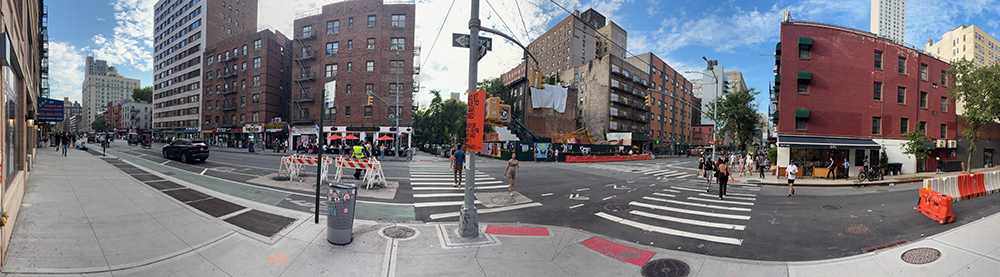
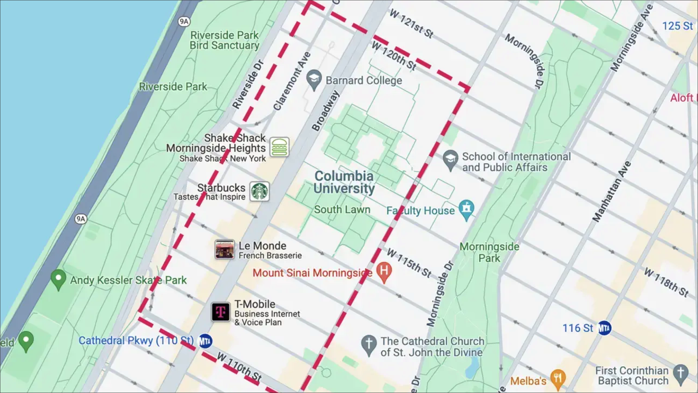

Urban Planning and Design: Class 1 Assignment
Columbia University | Pre-College Programs | Urban Planning and Design | Summer 2026
🧭 Preamble
Cities are often experienced at a glance — through familiar routes, destinations, and routines. Urban designers, however, learn to slow down and observe places more deliberately, paying attention to the relationships between people, buildings, infrastructure, movement, and public space. This first assignment introduces the foundational practice of urban observation through both classroom and field-based exercises. Students will learn how careful observation can reveal patterns, connections, boundaries, and questions that are not immediately apparent. These skills will serve as the basis for many of the analytical, mapping, and design activities that follow throughout the course.
👀 Exercise 1: Reading the City
Purpose
Urban designers spend much of their time observing, interpreting, and asking questions about places. While cities may appear familiar at first glance, careful observation often reveals layers of activity, infrastructure, social interaction, and spatial organization that are not immediately visible. This exercise introduces the practice of urban observation and prepares us for the afternoon field exercise.
Instructions
A panoramic street-level image of an urban environment will be projected at the front of the classroom. Spend several minutes carefully observing the image before responding to the prompts below. Work independently at first and avoid discussing your observations with classmates until instructed.

{kind=link}
Part 1: Observation (5 minutes)
Without interpreting or making assumptions, identify three things that you directly observe in the image.
Examples might include:
- Buildings
- Sidewalks
- Trees
- Signs
- People
- Vehicles
- Street furniture
- Public spaces
For each example below, you can use a notebook, laptop or sketchbook to record your entries.
Example:
Record three observations:
Part 2: Interpretation (5 minutes)
Based on your observations, identify two things that you think may be true about this place.
Remember that these are interpretations rather than facts.
Examples might include:
- The area appears busy or quiet.
- The neighborhood may be residential or commercial.
- The space appears welcoming or exclusive.
- People may use the space for recreation or commuting.
Example:
Record two interpretations:
Part 3: Questions (3 minutes)
Identify one question that cannot be answered simply by looking at the image.
Examples might include:
- Who lives here?
- How has this place changed over time?
- Who owns this space?
- How do people experience this place at night?
- What was here before these buildings were constructed?
Example:
Record one question:
Part 4: Pair Discussion (5 minutes)
Discuss your observations with a partner.
Consider the following questions:
- What did your partner notice that you did not?
- Which interpretations differed?
- Did your partner raise questions that you had not considered?
Part 5: Class Discussion (10 minutes)
As a class, we will compile our responses into three categories:
| Observation | Interpretation | Question |
|---|---|---|
| What do we see? | What do we think it means? | What do we still want to know? |
Reflection
Urban design begins not with answers, but with careful observation and thoughtful questions. Throughout this course, we will continually move between what we observe, how we interpret it, and what additional information we need to understand cities more deeply.
This afternoon’s field exercise will ask you to apply these same skills to real urban spaces surrounding Columbia University’s campus.
Key Takeaway Urban designers do not simply look at cities—they learn how to see them. Observation leads to interpretation, interpretation leads to questions, and questions lead to investigation.
🔍 Excercise 2: Reading the Campus Edge - Observation, Mapping, and Urban Discovery
Purpose
This exercise introduces the idea of the urban derive: a focused walk through the city that uses direct experience, movement, and observation as tools for understanding urban space. Rather than treating the city as something we already know, the derive asks us to move through space with curiosity and attention.
In this first field exercise, you will explore the area immediately surrounding Columbia University’s campus. Your goal is not to cover as much ground as possible, but to select one observation point and study it carefully. Through slow looking, note-taking, and mapping, you will begin to identify how the campus connects to — or separates from — the surrounding neighborhood.
Materials
- Printed campus-edge map (provided by the instructor)
- Pen or pencil
- Sketchbook or notebook
- Phone camera, optional
Field Boundary
You will receive a printed map showing the approved observation area around campus. You may move freely within this area, but you may not go beyond the marked boundary.

Part 1: Walk and Select a Site (10–15 minutes)
Walk slowly through the approved area. Pay attention to how the campus meets the surrounding city.
As you walk, look for places where you notice:
- A strong edge or boundary
- A connection between campus and neighborhood
- A disconnection or barrier
- A change in building type, scale, or activity
- A shift in sound, movement, visibility, or atmosphere
- A place that feels public, private, open, controlled, busy, or quiet
Once you find a location that seems interesting, stop and mark it with a dot on your printed map. This will require you to navigate with the map; in other exercises this week we will explore the ‘map view’ relative to the ‘street view’ in more detail. For today, we are just using the map as the inception point for your observation.
Part 2: Locate Yourself (5 minutes)
At your chosen observation point, record the following:
Street / nearby intersection:
_____________________________________________
Closest campus building or landmark:
_____________________________________________
Why did you choose this location?
_____________________________________________
Part 3: Direct Observation (10 minutes)
Spend several minutes looking carefully before writing. Do not begin with conclusions. Start with what you can directly observe.
Record at least five observations.
Examples might include:
- Building heights or materials
- Entrances, gates, walls, or fences
- Sidewalk width or pedestrian movement
- Trees, benches, signs, lighting, or street furniture
- People entering, passing through, waiting, gathering, or avoiding the space
- Traffic, bikes, deliveries, buses, or parked vehicles
- Sounds, smells, shade, sunlight, or other sensory details
Observation 1:
_____________________________________________
Observation 2:
_____________________________________________
Observation 3:
_____________________________________________
Observation 4:
_____________________________________________
Observation 5:
_____________________________________________
Part 4: Connections and Disconnections (10 minutes)
Now begin interpreting what you observed.
Answer the following prompts:
How does this location connect Columbia to the surrounding neighborhood?
_____________________________________________
How does this location separate Columbia from the surrounding neighborhood?
_____________________________________________
Who seems invited into this space? Who might feel less invited?
_____________________________________________
What kinds of movement happen here?
_____________________________________________
Part 5: Urban Questions (5 minutes)
Based on your observations, write two questions that would help you better understand this location.
These questions should move beyond what you can see immediately.
Examples:
- Who owns or manages this space?
- Has this edge changed over time?
- How do students, residents, workers, and visitors use this place differently?
- How does this space feel at different times of day?
- What design choices make this place feel open, closed, welcoming, or controlled?
Question 1:
_____________________________________________
Question 2:
_____________________________________________
Part 6: Optional Photo Documentation
You may take 1–3 photographs to support your written observations.
Photographs should document:
- Your observation point
- A specific spatial condition
- A connection, edge, threshold, or disconnection
- A detail that helps explain your analysis
Do not photograph people closely or intrusively. If people are visible, they should appear only as part of the broader public environment.
Reflection
The derive is not simply a walk. It is a method for noticing how urban space is organized, experienced, and interpreted. By slowing down and observing carefully, we can begin to see how streets, buildings, boundaries, entrances, and public spaces shape the relationship between an institution and the city around it.
Key Takeaway Urban analysis begins by locating yourself, observing carefully, and asking nuanced questions about the spaces around you.
📚 Class 1 Readings
Required Reading A
Jane Jacobs. The Uses of Sidewalks: Safety (excerpt from The Death and Life of Great American Cities, 1961).
In this foundational urban studies text, Jane Jacobs argues that vibrant city streets depend upon everyday activity, observation, and informal social interactions. Students should pay particular attention to Jacobs’ discussion of sidewalks, public life, and the ways in which people collectively shape the character and safety of urban spaces.
Guiding Questions
- What role do sidewalks play in the social life of cities?
- How does Jacobs define a successful urban street?
- What observations does Jacobs make that support her arguments?
- How might her ideas apply to the areas surrounding Columbia University’s campus?
Required Reading B
Guy Debord. Theory of the Dérive (excerpt, 1956).
In this short essay, Guy Debord introduces the concept of the dérive—a method of exploring urban space through attentive movement, observation, and discovery. Rather than moving through the city with a fixed destination, participants are encouraged to observe how streets, buildings, public spaces, and atmospheres influence their experience of place.
Note Debord’s writing can be challenging. Focus less on understanding every sentence and more on identifying the central idea of the dérive and how observation can change the way we experience urban space.
Guiding Questions
- What is a dérive?
- How is a dérive different from an ordinary walk through the city?
- What does Debord mean by “psychogeography”?
- How might the dérive help us better understand the spaces surrounding Columbia University?
Class 1 Homework Assignment
📖 Reading Reflection
As you complete the readings, identify:
- One idea you found particularly interesting.
- One observation you would like to test during the field exercise.
- One question you would like to discuss during the next class session.
Be prepared to discuss your responses during the opening discussion of Class 2, Tuesday June 30th.